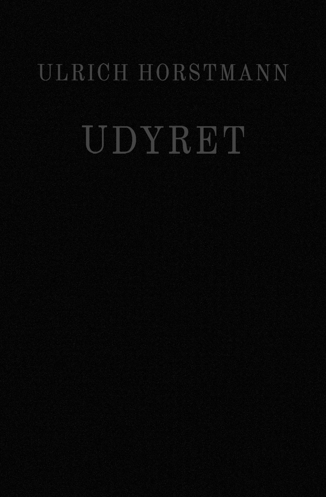

UDYRET
KONTURER AF EN MENNESKEFLUGTENS FILOSOFI
ULRICH HORSTMANN
»Apokalypsen står for døren. Vi udyr har længe vidst det, og vi ved det allesammen. Bag partistridighederne, ned- og oprustningsdebatterne, militærparaderne og antikrigsmarcherne, bag fredsviljens og de endeløse våbenstilstandes facade består en stiltiende enighed, en uudtalt, omfattende indforståelse: at vi må gøre en ende på os selv og vores ligemænd, så hurtigt og så grundigt som muligt – uden nåde, uden skrupler og uden overlevende.«